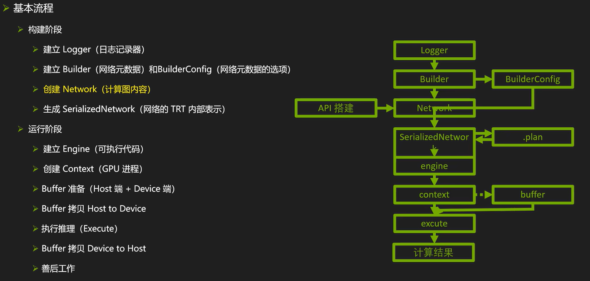
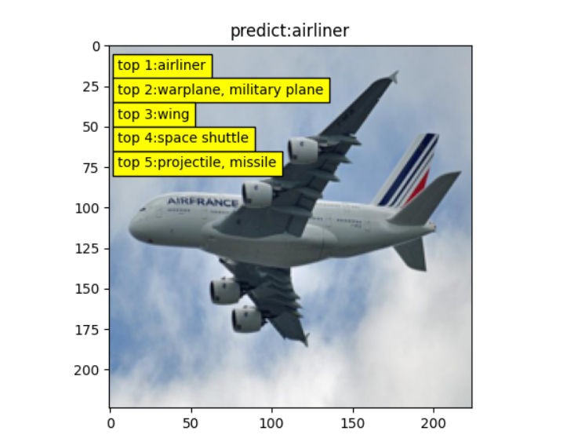

12.5 TensorRT API 使用
前言
在TensorRT的第二小节中，介绍了TensorRT模型计算图的构建通常有三种方式，分别是TensorRT API、parser、训练框架中trt工具。
三种方式的便捷程度与灵活度是依次递增和递减的，TensorRT API最灵活，可自由设定网络每一层，任意编辑模型的任何层，本节就介绍
TensorRT API的使用。
TensorRT API 简介
TensorRT API是构建Network的一种方法，整个TensorRT的使用流程还是与第二节中介绍的一样，整体流程如下图所示

这里不再赘述workflow内容，直接看TensorRT是如何构建network的，整体可分三个步骤：
- 创建network：network = builder.create_network()
- 逐层搭建网络：搭建网络层，并且赋予权重值
- 创建engine：engine = builder.build_engine(network, config)
由此可见，核心部分在于network提供了一系列网络层的搭建，这类似于pytorch中的nn.Module可以搭建各种网络层。
TensorRT官方提供的网络层可参考文档
下面介绍采用TensorRT API搭建常见网络层的方法。
TensorRT API 网络层创建
卷积层
add_convolution(self: tensorrt.tensorrt.INetworkDefinition, input: tensorrt.tensorrt.ITensor, num_output_maps: int, kernel_shape: tensorrt.tensorrt.DimsHW, kernel: tensorrt.tensorrt.Weights, bias: tensorrt.tensorrt.Weights = None)→ tensorrt.tensorrt.IConvolutionLayer
Parameters：
input – The input tensor to the convolution.
num_output_maps – The number of output feature maps for the convolution.
kernel_shape – The dimensions of the convolution kernel.
kernel – The kernel weights for the convolution.
bias – The optional bias weights for the convolution.
Returns：The new convolution layer, or None if it could not be created.
具体的创建案例代码解释如下：
- 设置输入input：这个input如果是第一层的话，需要自行构建data；如果是中间层，则需要设置为上一层的输出ITensor，例如pool2.get_output(0)返回的是一个ITensor对象。
- 设置卷积权重：在创建网络时，直接赋予卷积层的权重，这个权重通常通过wst文件获取，是一个字典，key是自行标识的名称，value是np.ndarray。
data = network.add_input('input', trt.float32, (3, 224, 224))
conv1 = network.add_convolution(input=data,
num_output_maps=64,
kernel_shape=(7, 7),
kernel=weight_map["conv1.weight"],
bias=trt.Weights())
fc1 = network.add_fully_connected(input=pool2.get_output(0),
num_outputs=OUTPUT_SIZE,
kernel=weight_map['fc.weight'],
bias=weight_map['fc.bias'])
BN层
在TensorRT API中没有BN的实现，BN层需要通过add_scale层来实现，即通过减法、乘法的操作等价于实现BN层。
下面代码是实现过程，核心是手动计算出需要shift和scale的数值，然后创建add_scale层。
def addBatchNorm2d(network, weight_map, input, layer_name, eps):
gamma = weight_map[layer_name + ".weight"]
beta = weight_map[layer_name + ".bias"]
mean = weight_map[layer_name + ".running_mean"]
var = weight_map[layer_name + ".running_var"]
var = np.sqrt(var + eps)
scale = gamma / var
shift = -mean / var * gamma + beta
return network.add_scale(input=input,
mode=trt.ScaleMode.CHANNEL,
shift=shift,
scale=scale)
激活函数层
激活函数层通过add_activation，其中提供了type属性来设置不同的激活函数。
relu3 = network.add_activation(ew1.get_output(0), type=trt.ActivationType.RELU)
type中可设置的类型有十多种，具体参考IActivationLayer的文档
RELU : Rectified Linear activation
SIGMOID : Sigmoid activation
TANH : Hyperbolic Tangent activation
LEAKY_RELU : Leaky Relu activation: f(x) = x if x >= 0, f(x) = alpha * x if x < 0
ELU : Elu activation: f(x) = x if x >= 0, f(x) = alpha * (exp(x) - 1) if x < 0
SELU : Selu activation: f(x) = beta * x if x > 0, f(x) = beta * (alpha * exp(x) - alpha) if x <= 0
SOFTSIGN : Softsign activation: f(x) = x / (1 + abs(x))
SOFTPLUS : Softplus activation: f(x) = alpha * log(exp(beta * x) + 1)
CLIP : Clip activation: f(x) = max(alpha, min(beta, x))
HARD_SIGMOID : Hard sigmoid activation: f(x) = max(0, min(1, alpha * x + beta))
SCALED_TANH : Scaled Tanh activation: f(x) = alpha * tanh(beta * x)
THRESHOLDED_RELU : Thresholded Relu activation: f(x) = x if x > alpha, f(x) = 0 if x <= alpha
池化层
pool1 = network.add_pooling(input=relu1.get_output(0),
window_size=trt.DimsHW(3, 3),
type=trt.PoolingType.MAX)
全连接层
全连接层在v8.6.1之后进行了删除，不再支持直接创建，需要用add_matrix_multiply、add_elementwise间接实现。
这个问题在官方文档没有指引，是通过多种方法找到的替代方案，这里简单记录debug过程。
运行报错：AttributeError: 'tensorrt.tensorrt.INetworkDefinition' object has no attribute 'add_fully_connected'
各种文档找'add_fully_connected'，无果；
官方文档查阅 ‘INetworkDefinition' 支持的方法，的确没了add_fully_connected，猜测肯定有对应方法替换，梳理所有支持的方法，找到最相关的方法是：add_matrix_multiply
TRT github仓库搜索add_matrix_multiply， sample.py，发现了FC层实现方法:
具体方法如下：
def add_matmul_as_fc(net, input, outputs, w, b):
assert len(input.shape) >= 3
m = 1 if len(input.shape) == 3 else input.shape[0]
k = int(np.prod(input.shape) / m) # 输入大小： 2048
assert np.prod(input.shape) == m * k
n = int(w.size / k) # 输出大小： 1000
assert w.size == n * k
assert b.size == n
input_reshape = net.add_shuffle(input)
input_reshape.reshape_dims = trt.Dims2(m, k)
filter_const = net.add_constant(trt.Dims2(n, k), w)
mm = net.add_matrix_multiply(
input_reshape.get_output(0),
trt.MatrixOperation.NONE,
filter_const.get_output(0),
trt.MatrixOperation.TRANSPOSE,
)
bias_const = net.add_constant(trt.Dims2(1, n), b)
bias_add = net.add_elementwise(mm.get_output(0), bias_const.get_output(0), trt.ElementWiseOperation.SUM)
output_reshape = net.add_shuffle(bias_add.get_output(0))
output_reshape.reshape_dims = trt.Dims4(m, n, 1, 1)
return output_reshape
V 8.6.1版本可用的方法如下：
fc1 = network.add_fully_connected(input=pool2.get_output(0),
num_outputs=OUTPUT_SIZE,
kernel=weight_map['fc.weight'],
bias=weight_map['fc.bias'])
以上是常见的网络层介绍，更多网络层参见文档
tensorrtx
学习TensorRT API搭建网络模型，十分推荐根据tensorrtx的代码资料学习。
tensorrtx是一个基于TensorRT API构建常用的网络模型库，它完全基于TensorRT API搭建模型，这使得模型的构建具备高可调节性，也对理解、学习网络模型内部细节提供了很好的资料。
tensorrtx为模型提供了python和c++的代码，使用tensorrtx的工作流程如下：
- 获取训练好的模型权重文件，例如pytorch的pt文件，tensorflow的ckpt文件，MXNet的.params+.json等
- 将权重文件导出为.wts文件，wts文件TensorRT定义的一种模型参数文件格式
- 创建network，逐网络层搭建模型，并基于wts文件赋予网络层权重值
- 搭建engine，进行推理或序列化保存到磁盘。
wts 文件
这里遇到一个新的文件格式wts，wts是Weights的缩写，是由Nvidia定义的一种模型参数文件格式。
wts文件只包含模型的参数数据,不包含网络结构等其他信息。网络结构需要另外定义，在这里就需要用TensorRT API逐层定义。
通过使用wts文件分离参数和网络结构，可以方便地进行模型压缩、量化等优化,也可以跨框架部署模型，同时还可保护模型的结构不被泄露。
ResNet50 推理
接下来演示如何采用TensorRT API搭建ResNet50，并完成推理，代码来自tensorrx和pytorchx。
整体分两步：
第一步，通过pytorchx的代码获得resnet.wts。在本教程，resnet.wts的生成可通过配套代码实现
第二步，通过tensorrtx的代码搭建TensorRT的network，并且创建engine进行推理。在本教程，推理代码可通过配套代码实现
wts文件生成
上述代码已集成到配套章节代码中，先看生成wts的核心代码：
wts文件第一行表明整个文件有多少个权重；
之后的每一行是一个权重名称及权重值的二进制形式。
f = open(path_wts, 'w') f.write("{}\n".format(len(net.state_dict().keys()))) for k, v in net.state_dict().items(): print('key: ', k) print('value: ', v.shape) vr = v.reshape(-1).cpu().numpy() f.write("{} {}".format(k, len(vr))) for vv in vr: f.write(" ") f.write(struct.pack(">f", float(vv)).hex()) f.write("\n")
以下是一个wts案例：
10
conv1.weight 150 be40ee1b bd20bab8 bdc4bc53 .......
conv1.bias 6 bd327058 .......
conv2.weight 2400 3c6f2220 3c693090 ......
network创建
接下来参照第一份配套代码，将engine的构建从直接加载文件改为基于network创建的形式
回顾之前直接读取磁盘上的engine文件，可以直接得到engine。
with open(model_path, 'rb') as ff, trt.Runtime(logger) as runtime:
engine = runtime.deserialize_cuda_engine(ff.read())
接下来看network逐层创建的过程，主workflow是一样的，需要创建各模块，这里有两个重点。
- trt推荐采用显式batch，因此create_network的时候需要设置1 << int(trt.NetworkDefinitionCreationFlag.EXPLICIT_BATCH)
- resnet50的创建，在函数build_model_by_trt_api中实现
def init_model(model_path):
logger = trt.Logger(trt.Logger.WARNING)
builder = trt.Builder(logger)
network = builder.create_network(1 << int(trt.NetworkDefinitionCreationFlag.EXPLICIT_BATCH))
network = build_model_by_trt_api(network, model_path)
config = builder.create_builder_config()
engine = builder.build_engine(network, config)
context = engine.create_execution_context()
context.set_input_shape("data", [1, 3, 224, 224]) # 绑定输入张量的形状
return context, engine
build_model_by_trt_api函数中就是上文提到的TensorRT API的各网络层创建接口，这里就不一一赘述，到这里，整体的流程梳理完成。
def build_model_by_trt_api(network, model_path):
weight_map = load_wts_file(model_path) # 权重字典
data = network.add_input("data", trt.float32, (1, 3, 224, 224))
assert data
conv1 = network.add_convolution(input=data,
num_output_maps=64,
kernel_shape=(7, 7),
kernel=weight_map["conv1.weight"],
bias=trt.Weights())
最终能得到如下图片，表明基于TensorRT API创建网络模型并推理是成功的。
tensorrtx还提供了非常多常见的网络模型，如果有需要使用 TensorRT API创建网络模型，建议优选tensorrtx中寻找参考案例。
小结
本小节介绍TensorRT API进行trt模型创建的流程及案例。首先介绍了TensorRT API创建网络层的方法及常用接口，随后介绍学习TensorRT API 非常好的代码库——tensorrtx，最后以一个resnet50的推理案例介绍基于TensorRT API 搭建模型的全流程。
通过本小节，可以了解TensorRT API 创建模型的过程与概念，更多案例及用法，请阅读：